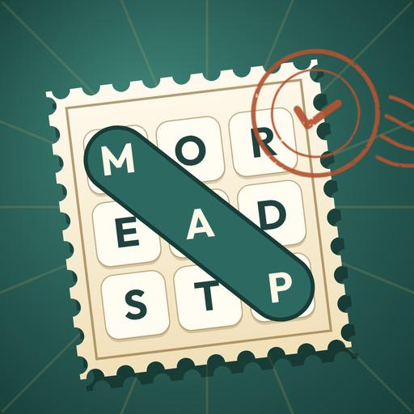

Postmark RamblesEffective date: 14 November 2026
Postmark Rambles is an HTML5 word-search game published by Matheus da Silveira Mello, an individual developer based in Portugal. Trace hidden words on themed trails across a paper atlas and collect destination stamps across ten regions. The game is available on third-party platforms such as CrazyGames and YouTube Playables, and as a local build.
- Explore 80 free trails, find words in straight lines and stamp your atlas.
- Continue an unfinished grid, revisit trails to improve your stars and completion times, and use one free hint per grid. There is no countdown.
- Play a daily trail based on your device’s UTC date, or voluntarily share a challenge link (CrazyGames and local builds).
- Adjust music and sound effects, synthesized locally with Web Audio.
No game account, no analytics, no purchases and no ads requested by the game; ads are disabled.
Privacy. A small JSON save keeps your unfinished grid, destination stamps, best times and stars, daily-trail result and audio settings in browser local storage or the platform’s save service. A voluntary challenge link contains only a format version, numeric seed, route, word language, completion time and hint count. The game never reads the clipboard; local and CrazyGames builds write the link only after you press Copy link. See the privacy policy.
Platforms. Third-party platforms process data under their own policies. YouTube Playables also receives an integer earned-star score and displays a plain trail record without in-game sharing controls. Browser-local saves remain until you or your browser clear the game’s site data; platform saves follow the platform’s controls.
Support
Questions or bug reports: matheus.mello.developer@gmail.com. Please mention "Postmark Rambles".